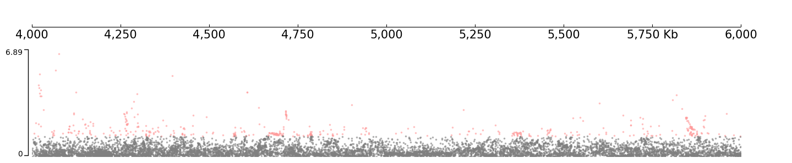
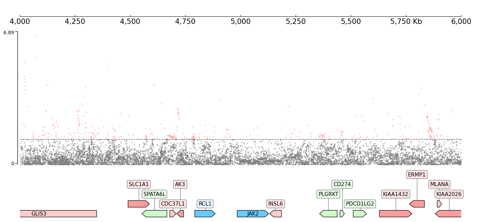

SNP Manhattan plot
[1]:
import sys; sys.path.insert(0, "../../../")
import coolbox
from coolbox.api import *
import numpy as np
[2]:
coolbox.__version__
[2]:
'0.4.0'
[3]:
data_dir = "../../../tests/test_data"
snp_file = f"{data_dir}/snp_chr9_4000000_6000000.snp"
test_region = "chr9:4000000-6000000"
SNP file:
[4]:
!head -n 5 ../../../tests/test_data/snp_chr9_4000000_6000000.snp
9 rs189401472 4000487 C T 261481 0.00113584 -0.00280829 0.00319297 0.379119
9 rs141556758 4000942 T G 262192 0.00131392 0.00119277 0.00296521 0.687497
9 rs117844905 4001207 A G 262342 0.0301343 -0.000341362 0.000628006 0.586741
9 rs142341062 4002372 A T 261738 0.00123979 6.13843e-05 0.003055 0.983969
9 rs500044 4002823 G A 262342 0.131891 0.000325518 0.000317269 0.304892
Specify the column names of the input file:
[7]:
frame = XAxis() + SNP(snp_file, fields=["chrom", "rsid", "pos", "a1", "a2", "n", "maf", "beta", "se", "pval"])
frame.plot(test_region)
[7]:

Plot with genes:
[9]:
gtf_file = f"{data_dir}/gtf_chr9_4000000_6000000.gtf"
frame = XAxis() + \
SNP(snp_file, col_chrom=0, col_pos=2, col_pval=9) + TrackHeight(10) + HLines(-np.log10(0.05)) + \
GTF(gtf_file)
frame.plot(test_region)
[9]:

CLI code
[10]:
%%bash
snp_file="../../../tests/test_data/snp_chr9_4000000_6000000.snp"
gtf_file="../../../tests/test_data/gtf_chr9_4000000_6000000.gtf"
coolbox add XAxis - \
add SNP $snp_file --col_chrom 0 --col_pos 2 --col_pval 9 - \
add TrackHeight 10 - \
add GTF $gtf_file - \
goto "chr9:4000000-6000000" - \
plot /tmp/test_coolbox.png